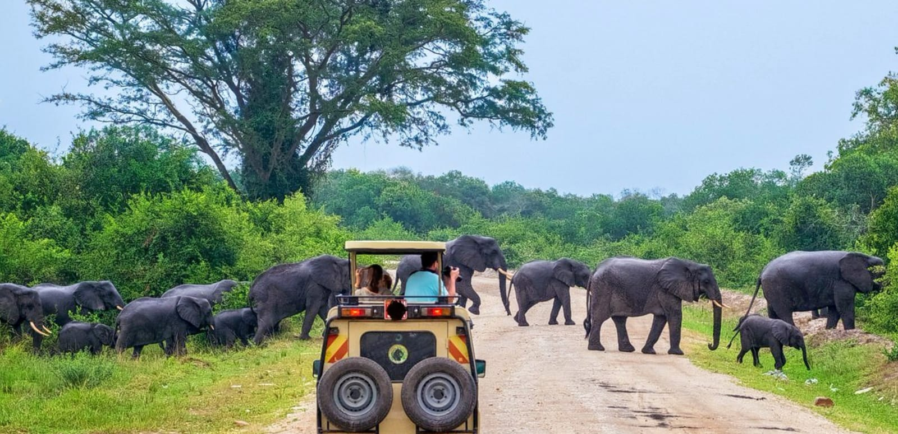
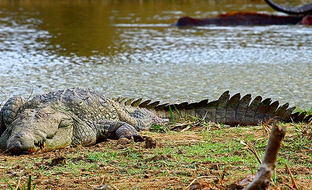
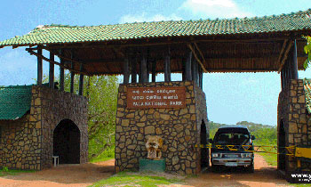
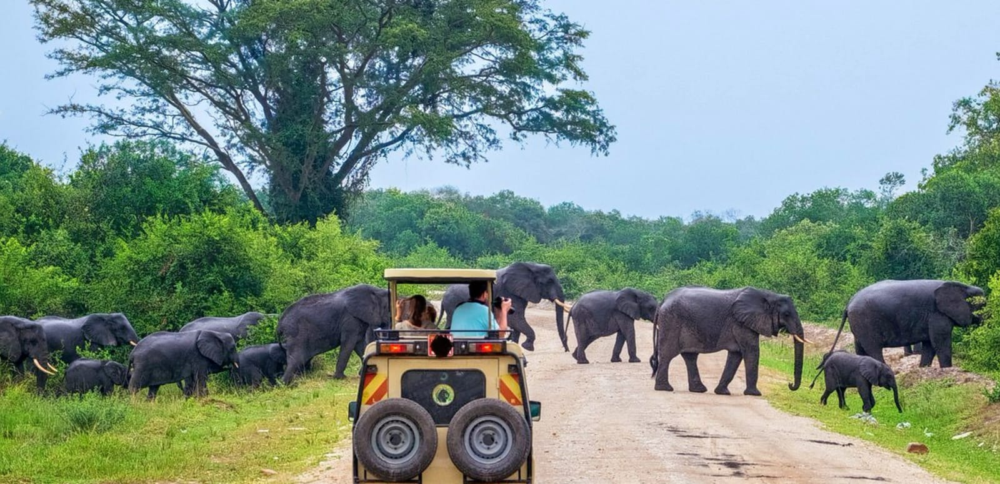
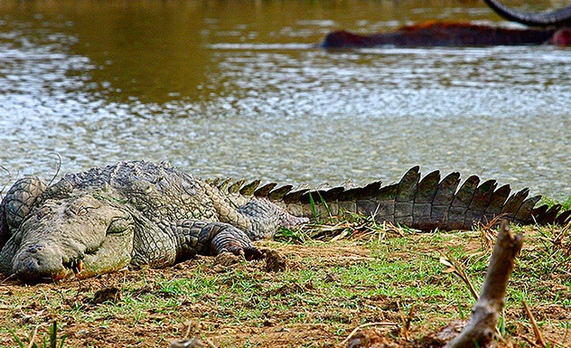
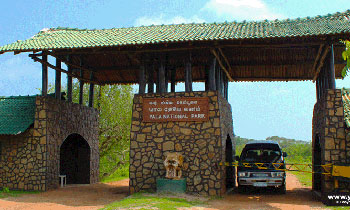

Yala National Park
Yala National Park is a huge area of forest, grassland and lagoons bordering the Indian Ocean, in southeast Sri Lanka. It’s home to wildlife such as leopards, elephants and crocodiles, as well as hundreds of bird species. Inland, Sithulpawwa is an ancient Buddhist monastery. Nearby caves contain centuries-old rock paintings. Southwest, Magul Maha Viharaya also has ancient Buddhist ruins. Both are pilgrimage sites.
Address : Hambanthota
Area : 978.8 km²
Phone : 0112 888 585
Established : 1900
Distence from Colombo : 237km through Rathnapura
Location
Images
 




